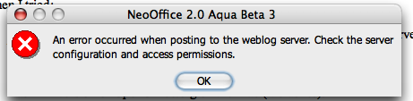

New Weblog plugin for OpenOffice.org Writer: Won't connect to wordpress.com
2006-10-20
Simon Phipps writes about a new $13.18 (that's Australian dollars) plugin for OpenOffice.org and StarOffice that purports to be a weblog editor.
In our first venture to fund Sun's OpenOffice.org developers through an add-on product, we've released Sun Weblog Publisher, a plug-in for OpenOffice.org or StarOffice 8 that turns it into a full-featured blog editor. At only $9.95 it's exceptional value, and it directly supports our efforts to keep OpenOffice.org development rolling.
I have tried it out but I can't recommend it.
I normally wouldn't buy a bit of software that I don't need, with no free trial, but I just had to try it, 'cos I've been wanting to see the issue of HTML export from OpenOffice.org addressed properly. I don't expect this to actually work for anything except plain paragraphs, for reasons discussed here many times before but I thought I should prove the point. Except that I can't prove it 'cos I can't post with it to see how it works.
First up, I went and set up an account at http://ptsefton.wordpress.com. That was easy.
Buying the software from Sun was a bit harder – I accidentally clicked something that said 'check' beneath my credit card details – turned out that meant I wanted to pay by cheque – only I didn't and there was no way to uncheck all the payment options I didn't want, so I ended up with an extra order I don't intend to pay for.
It's not supposed to work on Mac OS X in NeoOffice but it installs OK and it made a connection to ptsefton.wordpress.com once I realised that I had to go into the settings in NeoOffice and tell it not to use a web proxy (choose None rather than System).
I wrote some text.
Then I looked around for preview button to see what the HTML was going to be like. Nope.
Tried to publish and discovered that it won't connect to Wordpress.com any more. I can get a sort-of connection to the server, it seems, by turning on and off the proxy but I can't post. Half an hour of that was enough, so I headed off to Blogger to try my luck with an account there. That wouldn't work either, same complaint from the software:

Then I tried:
-
Connecting to the university network via VPN and configuring a proxy server in NeoOffice.
-
Changing my Wordpress password.
-
The X11 version of OpenOffice.org on the Mac (also not supposed to work and I can confirm that it doesn't. It won't install properly.).
-
The Windows version of OpenOffice.org on the PC at home (2.0.4 on XP SP2) which is supposed to work. Same symptoms as NeoOffice, mostly, only worse.
-
All of the above with the Bogger account.
No luck.
And the site says:
There is no product support for Sun Weblog Publisher. If you have feedback about the product you can email them to Weblog-Publisher-feedback@sun.com
I'll do that.